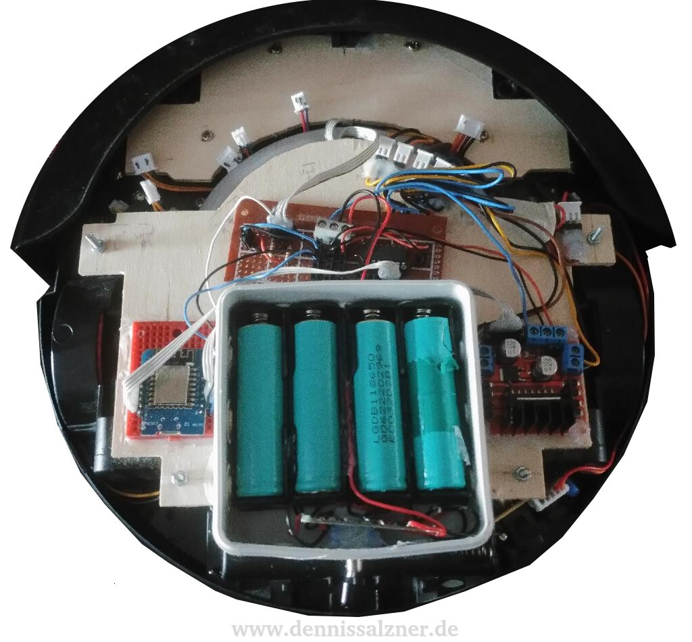

What
The DirtDevil Spider M607 is a cheap entry-level vacuum robot. It does not feature optical mapping, but rather randomly moves around until it hits an obstacle and then turns to avoid it. This works reasonably well, but I purchased the robot in order to modify it.
|
&nsbp;
|
 |
The software I wrote for the robot responds to REST-style API calls. As of now each motor can be controlled individually and the state of the front bumper can be retrieved. This allows a daemon software written in Python that runs on a computer to control the robot. If the robot does not hear from the computer in a pre-configured amount of time, the robot shuts off in order to avoid running in one direction infinitely, when the WiFi signal is lost.
When
Over the course of a year - I didn’t have the time to work on it continuously - I’ve replaced the entire electronics of the robot, CNC-milled a base plate for my own electronics and wrote software to control the robot.
Background
My original plan was to use an old android mobile phone to control the robot. A mobile phone has some advantages: it uses it’s own battery, has a camera and sensors, built-in WiFi and is built in an energy efficient way by design. I ditched this idea for a small WiFi board, the NodeMCU, because it is much less of a hassle to program. It appears to be non-trivial to get a serial connection or any kind of hardware connection to an android phone. This can be achieved with USB-to-Serial Adapters, but not all phones support USB On-The-Go, not all Android versions support serial communication via USB and the phone has to be rooted. I might get back to the Android phone later, but for now I can easily control the robot via the NodeMCU and use the phone additionally for a video feed using the phone’s IP address in the WiFi network. While testing the mobile phone concept, I used a small wide angle lense which I’ve glued to the mobile phone. velcro was used to connect a card board mount to the robots housing and the android phone. An Android App, “IP Webcam”, can be used to receive the video feed on a computer.
{kind=link}
{kind=link}
While this was fun, the robot was not controllable by the computer yet and instead followed its random path controlled by the factory firmware. It was time to open the robot and have a look at the electronics.
{kind=link}
{kind=link}
{kind=link}
The robot has two wheel modules with a motor on each side. In order to see how the wheel modules work and whether they have rotary encoders, I opened the enclosure of one wheel module. The wheel modules contain no rotary encoders and consist of small DC motors with a plastic worm gear and the rubber coated wheel itself. I might add some sort of rotary encoder (perhaps magnetic), but this will be difficult due to the tight spaces in the wheel modules.
{kind=link}
Next I built a small cardboard prototyp replacement for the PCB that runs all the connectors to the outside of the robot enclosure. Once I was sure about all the connectors and was able to run each motor and see the robot move accordingly, I CNC milled a proper replacement for the main PCB of the robot.
{kind=link}
{kind=link}
{kind=link}
This wooden replacement for the main PCB serves as a basis for the electronics and the photo sensor, which had to be placed in the same exact position as on the original PCB in order for the front bumper to be able to interrupt the photosensor, when the robot runs into an obstacle. Due to the batteries, which are larger than the original and can not be placed in the battery holder on the under side of the robot, I needed more space and CNC milled an additional wooden plate for most of the electronics and the batteries. The batteries are placed such that the robot has a perfect center of mass and does not tip over to the back. This can happen with a two wheel drive robot, such as this one, as it only has a single additional wheel in the front. The large plate also serves additional duties: It sits over the dust container and pushes against it to keep it shut. It also pushes the spring-loaded wheel modules against the ground. It can be removed by releasing four screws. I will use wing nuts in the future to more easily access the dust bin for emptying.
{kind=link}
{kind=link}
Some time later I decided to place the batteries into a junction box rated for 380V as a means of fire protection. The 18650 Li-Ion cells from an old Laptop I’ve used should be handled with care as they have a high energy density and are therefore capable of catching fire easily, if shorted or damaged. The junction box prevents wires from getting caught when the robot moves around under furnature. I use a battery protection circuit to prevent over-chaging or discharging beyond the advised ranges for Li-Ion cells. The cells are charged in a load-balancing charger outside of the robot for safety. I use a “Nitecore Intellicharger i4” as a battery charger, which is claimed to be especially safe.
{kind=link}
The finished device consists of the two base plates mounted on the robot. The front plate replaces the original PCB and the photo sensor is mounted to the front of it with hot glue. The larger rear plate contains, from left to right, the NodeMCU main micro-controller with WiFi, the junction box with four Li-Ion 18650 battery cells and battery protection circuit and the motor driver board. In front of the junction box is a small perfboard with a small circuit consisting of a transistor array to control the left and right wiper motors and the vacuum motor.
How
The electronics consist of the a main processor board, the NodeMCU. It contains the ESP8266 WiFi chip and the required electronics for it to function. The NodeMCU is powered by the Li-Ion cells that are protected by the battery protection system. The NodeMCU is also connected to the L298 motor driver board for the left and right motors and to an ULN2003A transistor array that is connected to the left and right wiper motors and the vacuum motor. The photo sensor for the front bumper is also connected to the NodeMCU with two resistors as a voltage divider.
The software is structured in two classes and a main function. One feature of the NodeMCU is that it can be easily integrated with the ArduinoIDE. By doing this I can use Arduino libraries such as the ArduinoJSON library for serializing and deserializing from/to objects.
The general concept of the software is to have the CWebserver class run a small webserver. This webserver responds to GET requests with a JSON string of the serialized state. A POST command with an identically structured JSON will overwrite all JSON fields with the ones received in the JSON string. The second class, CState, holds the state. It handles the serializing and deserializing and automatically applys the current state to the actuators. It also reads the photo sensor, that is interrupted by the front bumper on collision, and stores the current value in the state.
By writing the software this way I’ve effectively avoided having to write software for sockets and invent a protocol for controlling the robot. The software is far more simple and the entire state of the robot can be received with a command-line tool for HTTP-Requests such as “curl” or even the web browser.
A small batch script with a curl command for receiving the state of the robot may look like this:
IP="<IP of the NodeMCU>"
curl http://$IP/getthe robot responds with something like:
{
"mode": "idle",
"motorLeft": "off",
"motorRight": "off",
"wiperLeft": "off",
"wiperRight": "off",
"vacuum": "off",
"bumperFront": "false",
}Similarly, in order to set the left and right wheel motors to move the robot forward, the following can be run:
IP="<IP of the NodeMCU>"
curl -d '{ "motorLeft" : "fwd"}' -H "Content-Type: application/json" -X POST http://$IP/post
curl -d '{ "motorRight" : "fwd"}' -H "Content-Type: application/json" -X POST http://$IP/postand to stop the robot:
IP="<IP of the NodeMCU>"
curl -d '{ "motorLeft" : "off"}' -H "Content-Type: application/json" -X POST http://$IP/post
curl -d '{ "motorRight" : "off"}' -H "Content-Type: application/json" -X POST http://$IP/postFor more convenience I’ve also written a small Python controller tool with buttons for driving the robot around:
{kind=link}
The relevant portion of the Python code for the controller tool is similar to the “curl” calls. Python has two usefull libraries: The ‘requests’ library for making HTTP requests and the ‘json’ library reading and writing JSON strings.
import requests, json
def sendCommand(self, command):
data = json.loads('{}')
if command.endswith("stop"):
data['motorLeft'] = u'off'
data['motorRight'] = u'off'
if command == "forward":
data['motorLeft'] = u'fwd'
data['motorRight'] = u'fwd'
if command == "reverse":
data['motorLeft'] = u'rev'
data['motorRight'] = u'rev'
if command == "left":
data['motorLeft'] = u'rev'
data['motorRight'] = u'fwd'
if command == "right":
data['motorLeft'] = u'fwd'
data['motorRight'] = u'rev'
poststr = json.dumps(data)
poststr = poststr.replace('"', '\'')
try:
r = requests.post("http://" + ip + "/post", data=poststr, timeout=1)
except (requests.exceptions.ConnectionError, requests.exceptions.ReadTimeout):
print "connection lost"And with that in place it is easy to immitate the original robots behaviour by writing a python script that automatically controls the robot via WiFi, the aforementioned daemon software that I have running in the background on a Linux computer.
Progress
The robot runs well unless it loses the WiFi connection. I’ve set up the WiFi router in a high location and that helps a great deal. I may need to add a bigger antenna to the robot and/or the router.
The battery run time is around 2 hours on a single set of four fully-charged 18650 cells. That’s quite impressive and especially since they can be swapped for new fully-charged cells immediatly to increase the run time.
Next I will add more sensors. The software is easily extensible to add more sensor values to the JSON that can then be queried by the python daemon on the computer. The ultrasonic distance sensors I have may open opportunities to try some mapping and localisation or just some smarter movements than randomly bouncing off of obstacles.